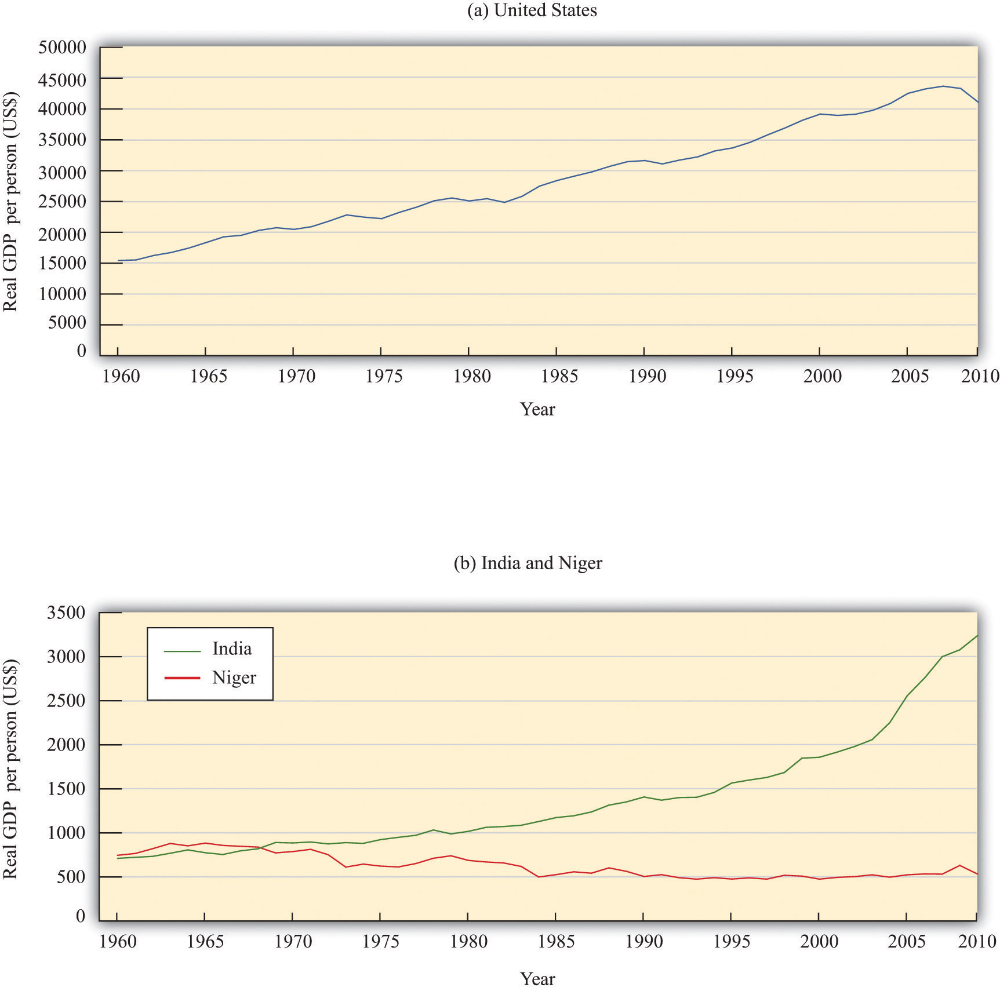

[…]
I thought about my new friend Mariya, her life and daily routine. She was married before I had my driver’s license. She pounded millet all day, sweating yet smiling. She hauled water from the well. She cooked. She birthed child after child. There was no end to the manual labor her life required. I liked to watch her. It was fascinating. But if hers was my life, I’d probably jump into that well.
I’ve always thought what life each soul is assigned to is a game of chance. I couldn’t help but to wonder what would have become of me had the powers that be had shaken those dice one more time on March 16, 1982, before moving the game piece that sent me to DePaul Hospital in St. Louis, Missouri.
If I had been born into Mariya’s life, would I have been able to hack it? If she had been born into my life, would she have been happier? […]Alexis Wolff, “Village Life—Niger,” February 27, 2005, accessed June 28, 2011, http://www.bootsnall.com/articles/05-02/village-life-niger.html.
In Niger, where Mariya lives, about 1 in 9 children die before their first birthday. Life expectancy at birth is 53 years, and less than 30 percent of the population can read and write. About one-fifth of the population is nomadic. An Oxfam study in 2005 found that nomads had recently lost about 70 percent of their animals, and that “almost one in ten families is surviving on a diet of mainly wild plants, leaves, and grass.”See “The World Factbook,” Central Intelligence Agency, accessed June 28, 2011, https://www.cia.gov/library/publications/the-world-factbook/index.html; and “Nomadic Way of Life in Niger Threatened by Food Crisis,” Oxfam America, August 16, 2005, accessed June 29, 2011, http://www.oxfamamerica.org/press/pressreleases/nomadic-way-of-life-in-niger-threatened-by-food-crisis. Real gross domestic product (real GDP)A measure of production that has been corrected for any changes in overall prices. per person in Niger is the equivalent of about $700 per year.
Call centers are a phenomenon that has taken over the young crowd of metros in India by a storm. Its implications are social, cultural and economic. It is a new society of the young, rich and free, selling the new dream of an independent life to the regular desi.
[…]
[C]heap labor in India owes its origin to the high rate of unemployment here. Hundreds of thousands of graduates are jobless and desperate for work in India.
[…]
Most call center jobs require a basic understanding of computers and a good grasp over English. And the urban youth of India are computer literate graduates with a command over English language. This is the ideal unskilled labor that the call center industry is looking for.
[…]
With its operations mainly during the night, the call centers offer an opportunity for the young to live a perpetual nocturnal life, a saleable idea to the youth. The fascination of the dark and the forbidden, is tremendous for the Indian youth, recently unleashed from the chains of tradition and culture. Because of this fascination, the industry has developed an air of revolution about itself. Not only is it cool to work for call centers, it is radical and revolutionary.
Just like the bikers subculture of the 60s and the flower children of the 70s, these call centerites also have their own lingo and a unique style of existence. Most of them are happy in a well paying monotonous job, reaping the benefits of technology, enjoying a life away from rush hour traffic and local trains. The moolah is good, the work is easy and life is comfortable.“The Indo-American Dream—Coming of Age with Call Center Jobs,” Mumbai Travel & Living Guide, accessed June 28, 2011, http://www.mumbaisuburbs.com/articles/call-centers-mumbai.html.
Life expectancy in India is 67 years, and the infant mortality rate is about 1 in 20. Real GDP per person is about $3,500.
More Americans own pets than ever before, and they're spending more money to keep them healthy, according to a survey released today by the American Veterinary Medical Association.
The number of U.S. households with pets climbed 7.6 million, to 59.5% of all homes, up from 58.3% in 2001. By comparison, about 35% of U.S. households have children, the Census Bureau says.
[…]
Pet owners are spending more on medical care. Veterinary expenditures for all pets were estimated at $24.5 billion in 2006. In inflation-adjusted dollars, Americans spent $22.4 billion in 2001.
This represents “the high-tech care that pet owners are demanding and willing to pay for,” DeHaven says. “Diseases that once would have been difficult to treat—diabetes, heart disease, cancer—today are very treatable. We’re even putting pacemakers in dogs.”Elizabeth Weiss, “We Really Love—and Spend on—Our Pets,” USA Today, December 11, 2007, accessed July 29, 2011, http://www.usatoday.com/life/lifestyle/2007-12-10-pet-survey_N.htm#.
In the United States, where spending on veterinary care for pets is considerably more than twice the entire GDP of Niger, the infant mortality rate is about 1 in 170, and life expectancy is about 78. Real GDP per person is more than 10 times greater than in India and almost 70 times greater than in Niger.
These stories are more than anecdotes. They are, in a real sense, representative of these three countries, as we can see by looking at economic data. Figure 21.1 "Real GDP per Person in the United States, India, and Niger" shows real GDP per person in India, the United States, and Niger over the 1960–2009 period.Alan Heston, Robert Summers, and Bettina Aten, “Penn World Table Version 6.2,” Center for International Comparisons of Production, Income and Prices at the University of Pennsylvania, September 2006, accessed June 29, 2011, http://pwt.econ.upenn.edu/php_site/pwt_index.php. The data in the Penn World Tables are constructed so that dollar figures for different countries can be legitimately compared. Specifically, the data are constructed on a purchasing power parity basis, meaning that they take into account the different prices of goods and services in different countries and are based on how much can actually be purchased. From part (a) of Figure 21.1 "Real GDP per Person in the United States, India, and Niger", we can see that GDP per person in the United States has grown substantially. On average, real GDP per person grew at 2 percent per year. Perhaps this doesn’t sound like a lot. Economic growth cumulates over time, however. An annual growth rate of 2 percent means that real GDP per person is about 2.6 times higher than half a century ago. To put it another way, each generation is roughly twice as rich as the previous generation. Although there are periods of high and low (sometimes even negative) growth in GDP per person, these fluctuations are overwhelmed by the overall positive growth in our economy. With this growth come many benefits: higher consumption, more varieties of goods, higher quality goods, better medical care, more enjoyable leisure time, and so on.
Figure 21.1 Real GDP per Person in the United States, India, and Niger
Real GDP per person in the United States (a) is substantially larger than (b) real GDP in India and Niger. The growth experiences of the three countries are also very different
Source: Alan Heston, Robert Summers and Bettina Aten, Penn World Table Version 7.0, Center for International Comparisons of Production, Income and Prices at the University of Pennsylvania, May 2011.
Part (b) of Figure 21.1 "Real GDP per Person in the United States, India, and Niger" shows real GDP per person for India and Niger. Notice first that the scale on this graph is very different. In 1960, real GDP per person in the United States was about $15,000 (measured in year 2005 dollars). In Niger and India, it was about 5 percent of the US figure—about $700 per person. The second striking feature of this graph is the very different performance of India and Niger. India, like the United States, has grown: GDP per person is much higher at the end of the sample than at the beginning. Indeed, India has grown faster than the United States: the average growth rate over the period was 3.1 percent. Over the last two decades, the difference is even starker: India has grown at about 4.4 percent per year on average. Nevertheless, the United States is still a lot richer than India.
By world standards, India is a long way from being the poorest country. In 1960, Niger was richer than India on a per person basis. But in the following half century, Niger became poorer, not richer. GDP per person decreased by almost 30 percent. India in 2009 was six times richer than Niger. Statistics on GDP are just that—statistics—and it is easy to look at graphs like these and forget that they are telling us about the welfare of human beings. But imagine for a moment that Niger had managed to grow like India, instead of collapsing as it did. People would not be surviving by eating grass, infants would be more likely to grow up to be adults instead of dying of preventable diseases, and children would be learning to read and write.
This is why the study of economic growth matters. And this is why, in this chapter, we take on arguably the most important question in the entire book.
Why are some countries rich and other countries poor?
Along the way, we tackle two other closely related questions. We want to know if the differences in income that we see in the world are likely to persist over time. The experiences of the United States, India, and Niger suggest that this question may not have a simple answer: India has been tending to catch up with the United States, but Niger has been falling further behind. As we seek to answer that question, we will also investigate the ultimate sources of economic growth:
Will poorer countries catch up to richer countries?
Why do countries grow?
The big mystery we investigate in this chapter is the vast variation in economic performance from country to country. We want to know why the experiences of the United States, India, and Niger are so different from one another.
We begin this chapter with an extended story. We think about how growth would work in a country with just a single inhabitant. Then we turn to a back-of-the-envelope calculation to understand why countries differ so much in terms of economic performance. To understand these differences, we focus attention on different inputs to the production function, first considering physical capital and then looking at human capital and technology. After that, we develop a complete framework for understanding how and why economies grow in the very long run. Finally, we look at policy and international institutions.